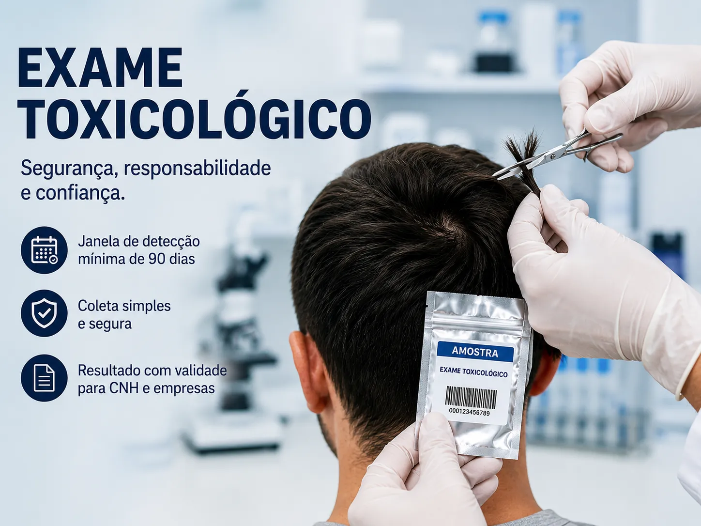

Laboratório para Fazer Exame Toxicológico em Nova Granada-SP: Tudo o que Você Precisa Saber
Se você é motorista profissional, está em processo de renovação da CNH ou precisa realizar o exame toxicológico para fins de concurso ou emprego, encontrar um laboratório de confiança em Nova Granada-SP é fundamental.
O exame toxicológico é um procedimento obrigatório por lei para diversas situações e exige precisão absoluta, rapidez na entrega do laudo e atendimento humanizado. Na Cruz de Prata, oferecemos a infraestrutura completa para você realizar seu exame com total segurança e praticidade.

Laboratório para exame toxicológico em Nova Granada-SP — Cruz de Prata
Neste artigo
O que é o exame toxicológico e para que serve?
O exame toxicológico de larga janela de detecção é um teste laboratorial capaz de identificar o consumo de substâncias psicoativas em um período prolongado (geralmente 90 dias antes da coleta). Ele analisa amostras de queratina — como cabelo ou pelos do corpo.
Sua principal finalidade é garantir a segurança viária e a integridade em ambientes de trabalho, prevenindo acidentes causados pelo uso de drogas que podem comprometer os reflexos e a atenção do indivíduo.
Novas Regras: Exame Toxicológico para Primeira CNH 2026
Atenção candidatos de SP: De acordo com as diretrizes do Detran-SP (24/06/2026), processos de primeira habilitação iniciados a partir de 17 de junho de 2026 exigem o exame toxicológico para todas as categorias, incluindo A e B.
Essa mudança visa elevar o padrão de segurança desde o início da formação do condutor. Se você está começando seu processo de habilitação em Nova Granada ou região, consulte o laboratório Cruz de Prata para realizar sua coleta com agilidade.
Quem precisa fazer o exame?
- Motoristas Profissionais: Condutores das categorias C, D e E devem realizar o exame para obtenção e renovação da CNH.
- Exame Periódico: Motoristas das categorias C, D e E com menos de 70 anos devem fazer o exame a cada 2 anos e 6 meses, independentemente da validade da CNH.
- CLT (Portaria MTE nº 612): Motoristas profissionais contratados sob regime CLT devem realizar o exame no admissional e no demissional.
- Concursos Públicos: Diversas carreiras (especialmente na área de segurança pública) exigem o toxicológico como etapa eliminatória.
Como o exame é realizado?
O procedimento é simples, indolor e não exige jejum. É coletada uma pequena amostra de cabelos (próximo à raiz) ou de pelos do corpo (peito, pernas, braços ou axilas).
Dúvida comum: Cortar o cabelo ou usar produtos químicos (tinturas, alisamentos) não impede a realização do exame, mas o comprimento do cabelo deve ser suficiente para a análise da janela de 90 dias (aproximadamente 3cm).
Prazos, Validade e Penalidades
A validade do laudo para apresentação no Detran é de 90 dias a partir da data da coleta. É fundamental planejar-se para que o exame não vença durante o processo administrativo.
Dirigir com o exame toxicológico vencido por mais de 30 dias é considerado infração gravíssima, com multa elevada e suspensão do direito de dirigir.
Onde fazer Exame Toxicológico em Nova Granada-SP?
A Cruz de Prata Laboratório e Clínica Médica é a sua referência em Nova Granada para exames toxicológicos. Com localização privilegiada e atendimento rápido, garantimos que seu processo seja o mais tranquilo possível.
Estamos localizados na Av. Osterno Nogueira Franco, 890 - Sandra Regina. Nosso laboratório conta com equipe treinada para realizar a coleta seguindo rigorosos protocolos de cadeia de custódia, garantindo a validade jurídica e administrativa do seu laudo.
Perguntas Frequentes (FAQ)
Agende sua Consulta Agora
Precisa realizar exames laboratoriais, consulta médica, exames ocupacionais ou exame toxicológico? Nossa equipe está pronta para atender você com rapidez, segurança e atendimento humanizado.